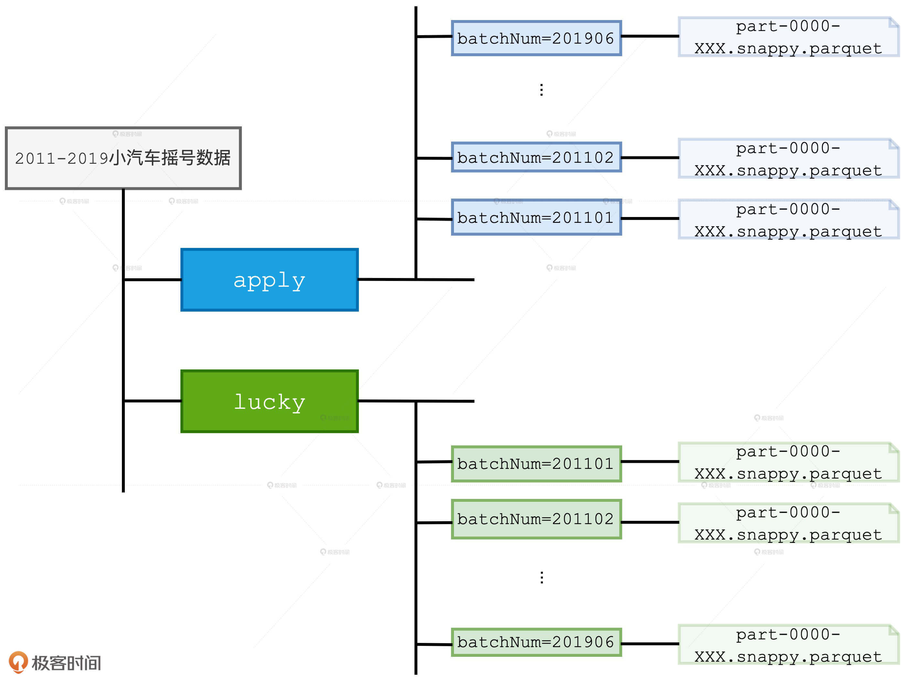
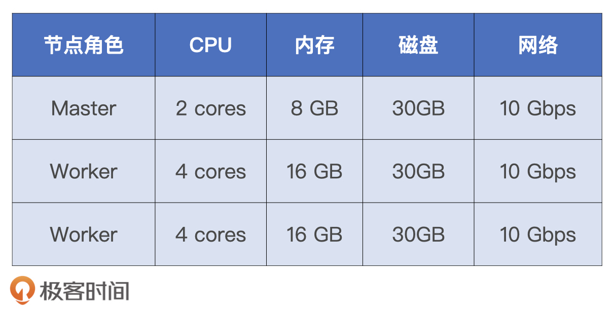
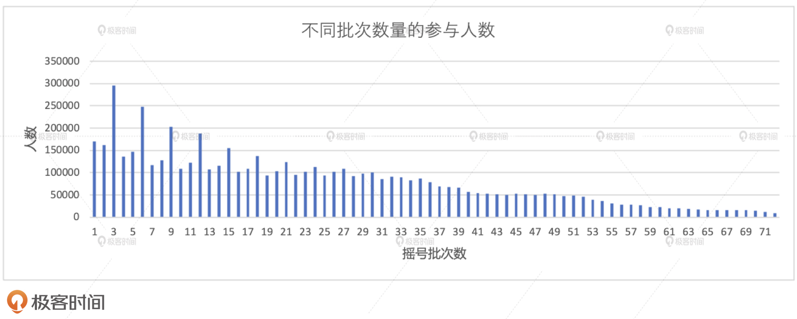
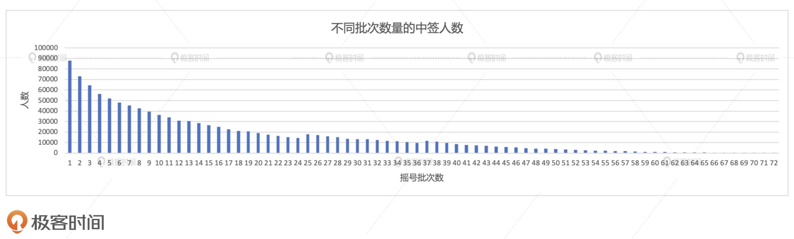
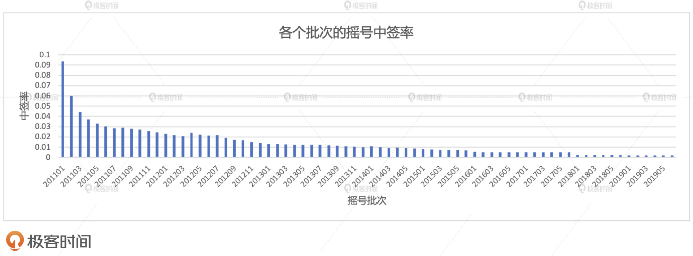
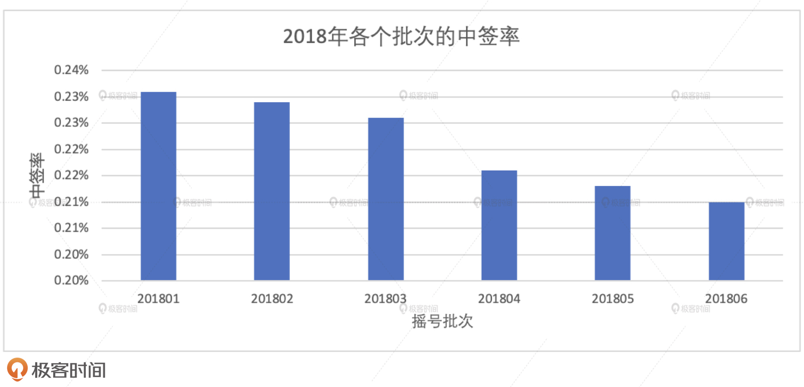
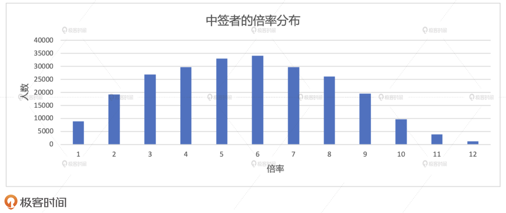
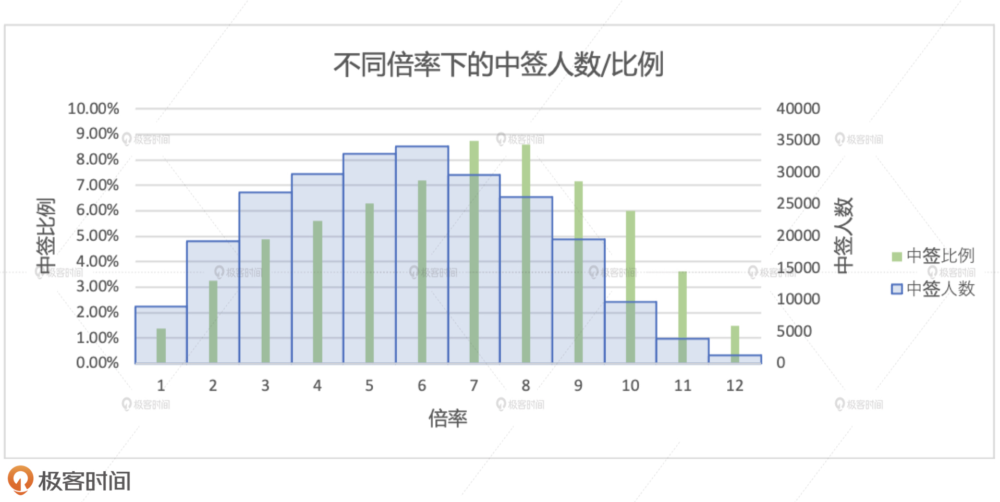
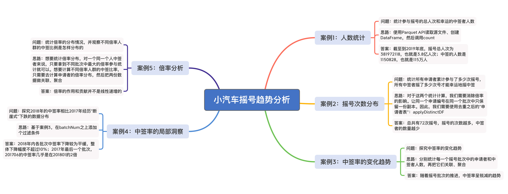

- 00 开篇词 Spark性能调优，你该掌握这些“套路”.md.html
- 01 性能调优的必要性：Spark本身就很快，为啥还需要我调优？.md.html
- 02 性能调优的本质：调优的手段五花八门，该从哪里入手？.md.html
- 03 RDD：为什么你必须要理解弹性分布式数据集？.md.html
- 04 DAG与流水线：到底啥叫“内存计算”？.md.html
- 05 调度系统：“数据不动代码动”到底是什么意思？.md.html
- 06 存储系统：空间换时间，还是时间换空间？.md.html
- 07 内存管理基础：Spark如何高效利用有限的内存空间？.md.html
- 08 应用开发三原则：如何拓展自己的开发边界？.md.html
- 09 调优一筹莫展，配置项速查手册让你事半功倍！（上）.md.html
- 10 调优一筹莫展，配置项速查手册让你事半功倍！（下）.md.html
- 11 为什么说Shuffle是一时无两的性能杀手？.md.html
- 12 广播变量（一）：克制Shuffle，如何一招制胜！.md.html
- 13 广播变量（二）：如何让Spark SQL选择Broadcast Joins？.md.html
- 14 CPU视角：如何高效地利用CPU？.md.html
- 15 内存视角（一）：如何最大化内存的使用效率？.md.html
- 16 内存视角（二）：如何有效避免Cache滥用？.md.html
- 17 内存视角（三）：OOM都是谁的锅？怎么破？.md.html
- 18 磁盘视角：如果内存无限大，磁盘还有用武之地吗？.md.html
- 19 网络视角：如何有效降低网络开销？.md.html
- 20 RDD和DataFrame：既生瑜，何生亮？.md.html
- 21 Catalyst逻辑计划：你的SQL语句是怎么被优化的？（上）.md.html
- 22 Catalyst物理计划：你的SQL语句是怎么被优化的（下）？.md.html
- 23 钨丝计划：Tungsten给开发者带来了哪些福报？.md.html
- 24 Spark 3.0（一）：AQE的3个特性怎么才能用好？.md.html
- 25 Spark 3.0（二）：DPP特性该怎么用？.md.html
- 26 Join Hints指南：不同场景下，如何选择Join策略？.md.html
- 27 大表Join小表：广播变量容不下小表怎么办？.md.html
- 28 大表Join大表（一）：什么是“分而治之”的调优思路？.md.html
- 29 大表Join大表（二）：什么是负隅顽抗的调优思路？.md.html
- 30 应用开发：北京市小客车（汽油车）摇号趋势分析.md.html
- 31 性能调优：手把手带你提升应用的执行性能.md.html
- Spark UI（上）深入解读Spark作业的“体检报告”.md.html
- Spark UI（下）：深入解读Spark作业的“体检报告”.md.html
- 期末考试 “Spark性能调优”100分试卷等你来挑战！.md.html
- 结束语 在时间面前，做一个笃定学习的人.md.html
- 捐赠
30 应用开发：北京市小客车（汽油车）摇号趋势分析
你好，我是吴磊。
如果你也在北京生活，那小汽车摇号这件事大概率也和你息息相关。我身边很多人也一直都和我抱怨说：“小汽车摇号这件事太难了，遥遥无期，完全看不到希望，感觉还没买彩票靠谱呢”。
实不相瞒，我自己也在坚持小汽车摇号，在享受8倍概率的情况下，还是没能中签。因此，包括我在内的很多人都想知道，为什么摇号这么费劲？一个人平均需要参与多少次摇号才会中签？中签率的变化趋势真的和官方宣布的一致吗？倍率这玩意儿，真的能提高中签的概率吗？
这些问题，我们都能通过开发一个北京市小汽车摇号趋势分析的应用来解答。我会用两讲的时间带你完成这个应用的开发，在这个过程中，我们可以把前面学过的原理篇、通用调优篇和Spark SQL调优篇的大部分知识都上手实践一遍，是不是一听就很期待呢？
话不多说，我们赶紧开始吧！
课前准备
既然是做开发，那我们就需要做一些准备工作。准备工作分为3部分，分别是准备数据、准备开发环境和准备运行环境。
准备数据
应用所需的数据，我已经帮你准备好，也上传到了网盘，你可以点击这个地址，输入提取码ajs6 进行下载。
数据的文件名是“2011-2019小汽车摇号数据.tar.gz”，解压之后的目录结构如下图所示。根目录下有apply和lucky两个子目录，apply的目录内容是2011-2019年各个批次参与摇号的申请编号，lucky目录包含的是各个批次中签的申请编号。方便起见，我们把参与过摇号的人叫“申请者”，把中签的人叫“中签者”。apply和lucky的下一级子目录是各个摇号批次，而摇号批次目录下包含的是Parquet格式的数据分片。- 
apply和lucky两个子目录，在逻辑上分别对应着事实表和维度表，也可以叫做“申请者表”和“中签者表”。两张表的Schema都是（batchNum，carNum），也就是（摇号批次，申请编号）。总之，事实表和维度表在存储方式上都做了分区设计，且分区键都是batchNum。
准备开发环境
数据下载、解压完成之后，然后我们再来准备开发环境。首先，我们来说说开发语言。要完成“趋势分析应用”的开发，你可以结合个人偏好，使用Python、Java、Scala三种语言中的任意一种。由于我本人习惯使用Scala做开发，因此整个项目的代码都是用Scala实现的。如果你是Java或是Python开发者，也完全不必担心，结合后续应用逻辑的讲解与Scala版本的参考实现，我相信你也很快能完成应用的开发。
“趋势分析应用”非常轻量，Scala版本的参考实现不超过200行代码。因此，只使用Sublime甚至是VI这样的纯文本编辑器，我们也能很快实现。不过，为了提高开发效率，以及方便后续应用的打包和部署，我还是推荐你使用集成式的IDE，比如IntelliJ IDEA、Eclipse 、IntelliJ PyCharm等等。IDE的选取原则和开发语言一样，只要选择自己最顺手的就行了。
准备运行环境
最后是运行环境，由于咱们的应用比较轻量，而且数据量较小，解压之后的Parquet文件总大小还不超4GB，因此，你甚至可以用手里的笔记本电脑或是台式PC，就可以把应用从头到尾地跑通。选择“轻装上阵”主要是考虑到，不少同学可能不方便搭建分布式的物理集群，我们要确保这部分同学不会因为硬件的限制而不能参与实战。
不过，毕竟咱们这两讲的初衷和重点是性能调优实践，网络开销优化是其中关键的一环。因此，有条件的同学，我还是鼓励你搭建分布式的物理集群，或是采用云原生的分布式环境。一来这样的分布式环境更接近实际工作中的真实情况，二来调优前后的性能差异会更加地显著，有利于你加深理解不同调优技巧的作用和效果。
我这边选择了3台物理节点，它们的资源配置分别如下。其实，为了跑通应用和做性能对比，你并不需要这么强悍的机器配置。我这么做主要是贪图执行效率，因为想要说明不同调优技巧的作用与功效，我只需要拿到调优前后的对比结果就可以了，这样的配置可以减少我的等待时间。

应用开发
准备好了数据、开发环境和执行环境之后，我们就步入正题，开始进行“趋势分析应用”的开发。为了解答大家关于小汽车摇号的种种困惑，在这个应用中，我们主要分析如下几个案例：
- 2011到2019年底，总共有多少人参与摇号
- 摇号次数的总分布情况，以及申请者的分布情况和中签者的分布情况分别是什么
- 中签率的变化趋势是什么
- 中签率是否发生过较大变化，怎么对它做局部洞察
- 倍率高的人是否更容易中签
接下来，我们就来一一厘清这些案例的计算逻辑，并进行代码实现。
案例1：人数统计
首先，我们需要对数据有一个基本的认知。我们先从最简单的统计计数开始，也就是统计一下截至到2019年底，参与摇号的总人次和幸运的中签者人数。应该说，这样的需求非常简单，我们只需使用Parquet API读取源文件、创建DataFrame，然后调用count就可以了。
val rootPath: String = _
// 申请者数据（因为倍率的原因，每一期，同一个人，可能有多个号码）
val hdfs_path_apply = s"${rootPath}/apply"
val applyNumbersDF = spark.read.parquet(hdfs_path_apply)
applyNumbersDF.count
// 中签者数据
val hdfs_path_lucky = s"${rootPath}/lucky"
val luckyDogsDF = spark.read.parquet(hdfs_path_lucky)
luckyDogsDF.count
把这段代码丢到spark-shell，或是打包部署到分布式环境去运行，我们很快就能够得到计算结果。截至到2019年底，摇号总人次为381972118，也就是3.8亿人次；中签的人数是1150828，也就是115万人。你可能会好奇：“摇号总人次为什么会有这么高的数量级？”
这其实并不奇怪。首先，同一个人可能参与多个批次的摇号，比如我就至少参加了60个批次的摇号（苦啊！）。再者，从2016年开始，小汽车摇号有了倍率这个概念。倍率的设计初衷，是让申请者的中签概率随着参与批次数量的增加而成比例地增加。也就是说，参与了60次摇号的人比仅参与10次摇号的人的中签概率更高。不过，官方对于倍率的实现略显简单粗暴。如果你去观察apply目录下2016年以后的批次文件就会发现，所谓的倍率实际上就是申请编号的副本数量。
正是出于以上两个原因，摇号总人次的体量才会有3.8亿人次。如果我们把倍率这个因素去掉，实际的摇号体量会是什么量级呢？
val applyDistinctDF = applyNumbersDF.select("batchNum", "carNum").distinct
applyDistinctDF.count
以（batchNum，carNum）为粒度进行去重计数，我们就能得到实际的摇号体量是135009819，也就是1.35亿人次。这意味着，从2011年到2019年这9年的时间里，有1.35亿人次参与了一项“抽奖游戏”，但是仅有115万人幸运中奖，摇号之难可见一斑。
案例2：摇号次数分布
接下来，我们进一步向下追踪（Drill Down），挖掘一下不同人群摇号次数的分布，也就是统计所有申请者累计参与了多少次摇号，所有中签者摇了多少次号才能幸运地摇中签。对于这两个统计计算，我们需要消除倍率的影响。也就是说，同一个申请编号在同一个批次中应该只保留一份副本。因此，我们需要使用去重之后的“申请者表”：applyDistinctDF。
场景1：参与摇号的申请者
首先，我们先来分析所有申请者的分布情况，当然也包括中签者。根据刚刚介绍的“业务需求”，我们很快就能写出相应的查询语句。
val result02_01 = applyDistinctDF
.groupBy(col("carNum"))
.agg(count(lit(1)).alias("x_axis"))
.groupBy(col("x_axis"))
.agg(count(lit(1)).alias("y_axis"))
.orderBy("x_axis")
result02_01.write.format("csv").save("_")
将上述代码付诸执行，我们会得到如下图所示的计算结果。其中，横坐标代表申请者参与过的摇号批次次数，纵坐标是对应的参与人数。从2011年到2013年，摇号是每月一次的。而从2014开始，摇号是每两个月一次的。因此，截至到2019年底，总共有72（12 * 3 + 6 * 6）次摇号。所以，我们看到横坐标的值域是从1到72，1表示摇过1次的人，72就比较惨了，它表示摇过72次的人。

从图中我们不难发现，随着摇号次数的逐级递增，人数分布基本上呈现出了逐级递减的趋势。那这意味着什么呢？这意味着每隔两个月就会有新人从驾校毕业，加入到庞大的摇号大军中来。仔细观察上图的左半部分我们会发现，摇号次数凡是遇到3的倍数，对应的人数往往比其“左邻右舍”多出甚至两倍，这是为什么呢？
我们刚刚说过，从2014年开始，摇号是每两个月进行一次。因此，摇号次数相差3则意味着两次摇号之间的时间差是半年左右。比如说，摇了3次的人就比摇了6次的人晚半年加入摇号大军。那么，半年意味着什么呢？我们不妨脑洞一下，尽管每个月都有从驾校毕业的学员，但是，寒暑假往往是大批量“生产”学员的高峰时期，而寒暑假恰好相差半年左右。你觉得我这个推测合理吗？
场景2：幸运的中签者
接下来，我们再来看看，那些中签的幸运儿们到底有多幸运？要想得到中签者的摇号次数，我们需要把applyDistinctDF和luckyDogsDF两张表做内关联，然后再做分组、聚合，代码实现如下表所示。
val result02_02 = applyDistinctDF
.join(luckyDogsDF.select("carNum"), Seq("carNum"), "inner")
.groupBy(col("carNum")).agg(count(lit(1)).alias("x_axis"))
.groupBy(col("x_axis")).agg(count(lit(1)).alias("y_axis"))
.orderBy("x_axis")
result02_02.write.format("csv").save("_")
将上述代码付诸执行，我们会得到如下图所示的计算结果，其中横纵坐标的含义与场景1一样，分别是摇号批次数和对应的人数分布。我们发现，随着摇号次数的逐级递增，人数的分布完全是单调递减的。也就是说，摇号的次数越多，中签者的数量越少。我能想到的一个原因是，摇号的次数越高，对应的参与人数就越少，这一点在场景1已经得到了验证。这个其实也不难理解，能一直坚持摇60次以上的玩家，真的都是骨灰级玩家。那么，参与的人基数小，中签者的数量自然就更少。- 
不过，如果假设申请者两个月摇一次号，那么我们就会得出一个非常扎心的结论：摇号中签的人往往不需要等待太长的时间，绝大多数都是在2-3年内摇中了购车资格，因为前半部分的总数占到了绝大多数。而等待3年以上才摇上号的人，反而成了幸运儿群体中的“少数派”。这不禁让我想起了当年大家开玩笑的那句话：“你要是人品够用，早就该摇上了。超过3年还没摇上，就说明你人品余额不足，摇号这件事以后也就不用指望了”。
案例3：中签率的变化趋势
从摇号次数的分布来看，申请者和中签者的变化趋势是一致的，那这是否意味着二者相除之后的比例是稳定的呢？二者的商实际上就是中签率。接下来，我们就去探究一下中签率的变化趋势。要计算中签率，我们需要分别统计每一个摇号批次中的申请者和中签者人数，然后再把它们做关联、聚合，代码实现如下所示。
// 统计每批次申请者的人数
val apply_denominator = applyDistinctDF
.groupBy(col("batchNum"))
.agg(count(lit(1)).alias("denominator"))
// 统计每批次中签者的人数
val lucky_molecule = luckyDogsDF
.groupBy(col("batchNum"))
.agg(count(lit(1)).alias("molecule"))
val result03 = apply_denominator
.join(lucky_molecule, Seq("batchNum"), "inner")
.withColumn("ratio", round(col("molecule")/col("denominator"), 5))
.orderBy("batchNum")
result03.write.format("csv").save("_")
我们得到的中签率示意图如下所示。其中，横坐标为各个摇号批次，从201101到201906，也就是从2011年的第一批到2019年的第72批，纵坐标就是中签率。从中我们可以很直观地看到，随着摇号批次的推进，中签率呈锐减的趋势。201101批次的中签率在9.4%左右，不到10%。而201906批次的中签率为1.9‰，也就是千分之一点九。这么看来，1000个人里面能摇上号的还凑不够两个人，这也难怪摇号如此之难了。

案例4：中签率局部洞察
第4个案例与案例3的区别在于，我们只关注2018年的中签率变化趋势。这样做的原因有二：一来，通过计算和对比，我发现2018年的中签率相比2017年几乎经历了“断崖式”的下跌，因此我想给2018年一个特写；二来，只关注2018年的数据，可以让我们有机会对比启用AQE Join策略调整前后的性能差异。
基于案例3的代码实现，要关注2018年，我们只需要在batchNum之上添加个过滤条件就好了。
// 筛选出2018年的中签数据，并按照批次统计中签人数
val lucky_molecule_2018 = luckyDogsDF
.filter(col("batchNum").like("2018%"))
.groupBy(col("batchNum"))
.agg(count(lit(1)).alias("molecule"))与
// 通过与筛选出的中签数据按照批次做关联，计算每期的中签率
val result04 = apply_denominator
.join(lucky_molecule_2018, Seq("batchNum"), "inner")
.withColumn("ratio", round(col("molecule")/col("denominator"), 5))
.orderBy("batchNum")
result04.write.format("csv").save("_")

结合案例3与案例4的执行结果，我们至少有两点发现。第一点，2018年内各批次中签率下降较为平缓，从201801批次的2.3‰下降至201806批次的2.1‰，整体下降幅度不超过10%。第二点，2017年最后一个批次，也就是201706批次的中签率在4.9‰左右，而201801批次的中签率为2.3‰，在短短两个月之内，中签率惨遭“腰斩”，并在接下来的两年里，一路阴跌，最终在201906批次破掉2‰。
案例5：倍率分析
那么，在中签率如此之低的情况下，倍率这玩意还有意义吗？接下来，我们先去探索倍率的分布情况，然后再去观察，不同倍率的人群，他们的中签比例是怎样分布的。
场景1：不同倍率下的中签人数
我们先来统计一下，那些有幸中签的人分别是在多大的倍率下中签的。从2016年开始，才有倍率这个概念，因此，对于倍率的统计，我们只需要关注2016年以后的摇号数据即可。对于同一个中签者，他在不同批次的倍率可能是不同的，我们只需要拿到其中最大的倍率参与统计就可以了。原因很简单，最大的倍率就是她/他中签之前的倍率。
另外，倍率的计算需要依赖原始的多副本摇号数据，所以这里我们不能再使用去重的摇号数据，而应该用包含重复申请编号的applyNumbersDF表。基于这样的逻辑，我们的代码实现如下。
val result05_01 = applyNumbersDF
.join(luckyDogsDF.filter(col("batchNum") >= "201601")
.select("carNum"), Seq("carNum"), "inner")
.groupBy(col("batchNum"),col("carNum"))
.agg(count(lit(1)).alias("multiplier"))
.groupBy("carNum")
.agg(max("multiplier").alias("multiplier"))
.groupBy("multiplier")
.agg(count(lit(1)).alias("cnt"))
.orderBy("multiplier")
result05_01.write.format("csv").save("_")
中签者的倍率分布如下图所示。其中，横坐标为中签者的倍率，更准确地说，是中签者在参与的摇号批次中最大的副本数量，纵坐标是人数分布。通过观察执行结果我们不难发现，中签者的倍率呈现明显的正态分布。因此，从这张图我们可以得到初步结论：要想摇中车牌号，你并不需要很高的倍率。换句话说，对于中签这件事来说，倍率的作用和贡献并不是线性递增的。

不过，和案例2类似，这里同样存在一个基数的问题。也就是说，倍率高的人本来就少，其中的中签者数量自然也少。因此，我们还要结合申请者的倍率分布，去计算不同倍率下的中签比例，才能更加完备地对倍率的作用下结论。
场景2：不同倍率下的中签比例
对倍率分布有了初步认知之后，我们再来计算不同倍率人群的中签比例，去探究倍率本身对于中签的贡献究竟有多大。有了场景1中签者的倍率分布，我们只需要去计算申请者的倍率分布，然后把两份数据做关联、聚合，就可以得到我们想要的结果。
// Step01: 过滤出2016-2019申请者数据，统计出每个申请者在每一期内的倍率，并在所有批次中选取最大的倍率作为申请者的最终倍率，最终算出各个倍率下的申请人数
val apply_multiplier_2016_2019 = applyNumbersDF
.filter(col("batchNum") >= "201601")
.groupBy(col("batchNum"), col("carNum"))
.agg(count(lit(1)).alias("multiplier"))
.groupBy("carNum")
.agg(max("multiplier").alias("multiplier"))
.groupBy("multiplier")
.agg(count(lit(1)).alias("apply_cnt"))
// Step02: 将各个倍率下的申请人数与各个倍率下的中签人数左关联，并求出各个倍率下的中签率
val result05_02 = apply_multiplier_2016_2019
.join(result05_01.withColumnRenamed("cnt", "lucy_cnt"), Seq("multiplier"), "left")
.na.fill(0)
.withColumn("ratio", round(col("lucy_cnt")/col("apply_cnt"), 5))
.orderBy("multiplier")
result05_02.write.format("csv").save("_")
不同倍率下的中签比例如下图所示。其中横坐标为倍率，纵坐标有两个。蓝色柱状图体代表中签人数，它的分布与场景1的分布是一致的；绿色柱状条表示的是中签比例，它表示在同一个倍率下，中签人数与申请人数的比值。

与中签人数一样，中签比例在不同的倍率下，也呈现出了正态分布。有了这份数据做补充，我们可以夯实场景1中得出的结论。也就是，倍率对中签的贡献极其有限。这个结论很好地解释了，为什么摇号很久，倍率很高的人也难以中签。
到此为止，通过以上几个案例的分析，我们就对摇号次数分布、中签率变化趋势、倍率分布与中签比例有了答案。
小结
今天这一讲，我们重点开发了一个趋势分析应用，来解答北京市小汽车摇号的各个问题。这个应用主要实现了5个案例，分别是摇号次数分布、中签率变化趋势、中签率的大变动、倍率分布与中签比例。为了方便理解，我把它们要解决的问题、答案、主要的实现思路都总结在了下面的脑图中，你可以看一看。

至于这5个案例的代码实现和执行结果，我把它们都上传到了公用的GitHub仓库，你可以从这个地址获取完整内容。
当然，目前的代码肯定存在很多可以优化的地方，至于怎么优化，我先卖个关子，下一讲再详细来说。
每日一练
- 如果让你来实现小汽车摇号的倍率机制，你觉得怎么实现才更严谨呢？
- 基于这份2011-2019的小汽车摇号数据，你还能想到哪些有意思的洞察、视角和案例，值得我们进一步去探索呢？
- 你认为，倍率对于中签的贡献和作用微乎其微的原因是什么呢？
期待在留言区看到你的思考和答案，我们下一讲见！
© 2019 - 2023 Liangliang Lee. Powered by gin and hexo-theme-book.